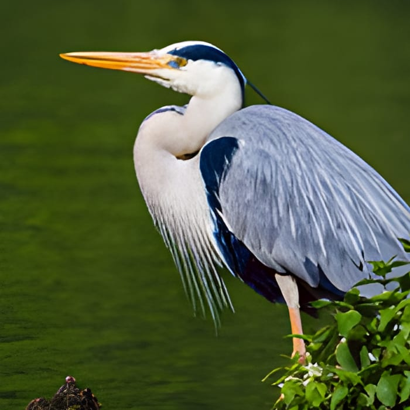

Enlarger upscales photographs 4×, 8×, or 16× using your own GPU. No cloud upload, no subscription, no Python to install — one Windows installer, and your images never leave your machine.
Drag the handle. Both sides start from the same 250×250 pixel source and are enlarged to 1000×1000 — the left is an ordinary bicubic resize, the right is Enlarger. Shown at 1:1 pixels, so what you see is what prints.

Test images from Pixabay. These are genuine outputs from the shipping engine, not marketing renders.
8× and 16× run as sequential 4× passes, which the underlying study showed is visibly better than a single-shot large-factor model.
Built on Vulkan, so NVIDIA, AMD, and Intel Arc all work. No CUDA install, no vendor lock-in.
Before/after slider with true 1:1 pixel zoom and synchronised pan — the loop that actually matters when you are judging a print.
Point it at a folder. Per-image progress, failure isolation, and a summary at the end rather than a crash on image 40.
Optional LPIPS score against a reference image, so quality is a number and not just a vibe. Runs on CPU, never blocks the upscale.
Entirely local. No account, no upload, no telemetry. PNG, JPEG, and TIFF out.
| OS | Windows 10 or 11, 64-bit |
| GPU | Any Vulkan-capable GPU (NVIDIA, AMD, Intel Arc), 4 GB VRAM or more |
| RAM | 8 GB minimum; 16 GB or more for 16× output |
| Disk | ~300 MB installed |
| Price | Free. MIT licensed, source on GitHub. |
Enlarger is the practical output of a 50-hour capability study that benchmarked diffusion-based super-resolution (SUPIR, HYPIR, Stable Diffusion upscalers) against GAN-based Real-ESRGAN across a frozen 60-image test set. The study's honest conclusion — including a negative result on the LoRA it trained — is what decided which engine ships here.